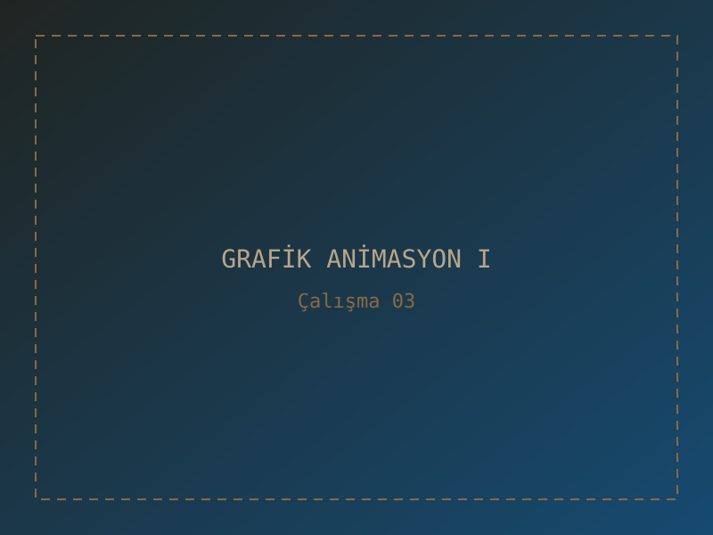
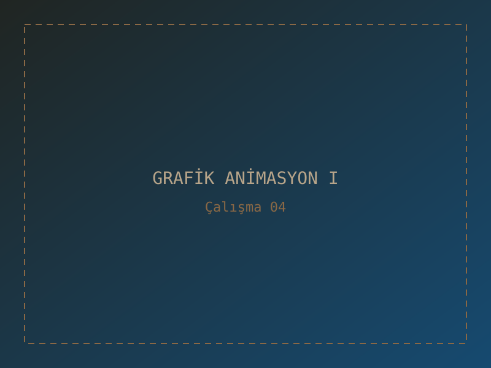

2026
Bu Portfolyo Sitesi
Fiber optik tünel, Blender'da modellenip Three.js ile canlı çizilen 3B Hakkımda sahnesi ve kaydırmaya bağlı animasyonlar içeren kişisel sitem.
- HTML
- CSS
- JavaScript
- Three.js
- GSAP
- Blender
03 — Projeler
Grafik Animasyon I dersinde yaptığım çalışmalar, yazılım projelerim ve sahada yer aldığım elektrik işleri.


Görseller yer tutucudur. Çalışmalarını assets/images/projeler/ klasörüne koyup açıklamaları yazacağız.
2026
Fiber optik tünel, Blender'da modellenip Three.js ile canlı çizilen 3B Hakkımda sahnesi ve kaydırmaya bağlı animasyonlar içeren kişisel sitem.
2026
Tam otomatik kümeste kablo çekimi ve elektrik tesisatı; kümes ofisinin inşaat sürecindeki tesisat uygulamaları.
2025
Doğalgaz basınç düşürme ve ölçüm istasyonunda pano bağlantıları, saha kablolaması ve projektör montajı.